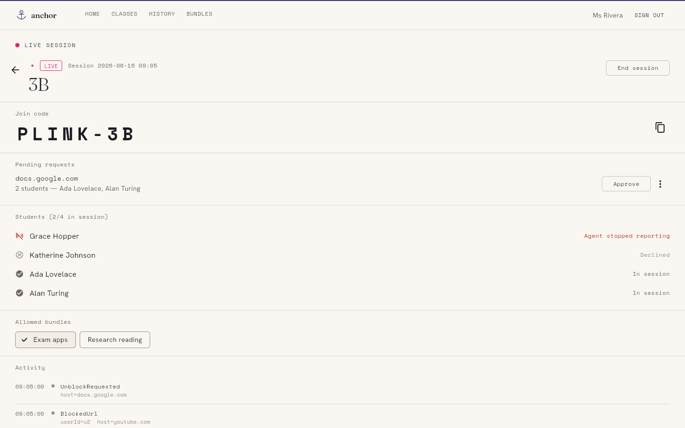
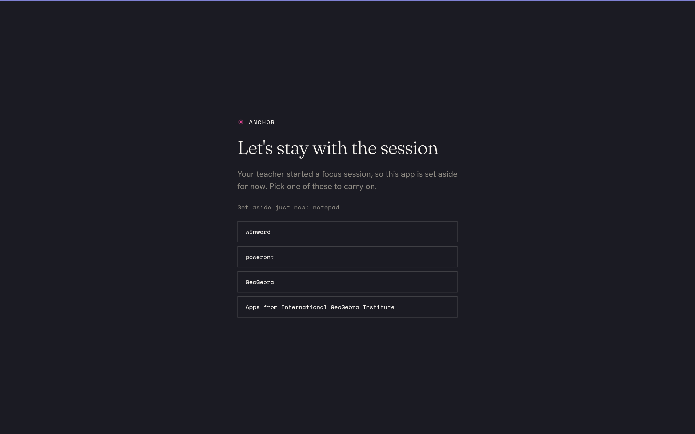

01
A teacher starts a session
A teacher opens Anchor and starts a focus session for the class, choosing the allowlist of apps and websites that lesson needs.
Anchor lets a teacher start a focus session for a class. For its duration each student's device softly keeps to a teacher-defined allowlist, and off-task activity surfaces live on the teacher's dashboard. Made by teachers, free and open source for everyone.
What Anchor is
01
A teacher opens Anchor and starts a focus session for the class, choosing the allowlist of apps and websites that lesson needs.
02
For the session's duration, each signed-in student's device softly enforces that allowlist. Off-list apps get pushed to the background; off-list pages show a friendly block page.
03
When a device drifts off task, it shows up on the teacher's dashboard in real time — so the teacher can quietly nudge a student back, not police a log later.
No monitoring, no surveillance
Anchor is built for soft enforcement. The agent pulls focus back and surfaces off-list activity, but it does not pretend to be tamper-proof — a motivated student can defeat it, and that is by design. The goal is to make off-task behaviour visible to the teacher, not impossible.
Nothing is recorded between sessions. Anchor only observes activity while a teacher has a session running, and only the off-list parts; on-allowlist work is never logged. We are honest about who is in control: a teacher set this up, it ends when the lesson ends, and the data stays inside the school that runs it.
How it works
A teacher starts a session from the dashboard. The backend pushes it to every signed-in student device over a realtime channel; each device enforces the allowlist locally and reports off-list activity straight back to the dashboard. Five small components do the work:
A native Windows tray app on each student laptop. It joins the session, gently pulls focus back from off-list apps, and shows the block overlay.
Filters URLs inside Edge against the session allowlist and shows a friendly block page for off-list pages.
A native-messaging bridge so the agent and extension watch each other: if either is disabled mid-session, the other reports it.
The teacher's web instrument: start and stop sessions, manage classes and allowlists, and watch live student state.
Each school self-hosts its own backend. It relays sessions to devices and stores classes, allowlists, and session events — and nothing else.


Free & open source
Anchor is GPL-3.0 licensed and self-hostable. Each school runs its own backend; Plink Labs operates none and receives no student data. The full source — including exactly what each component collects — is public and auditable.